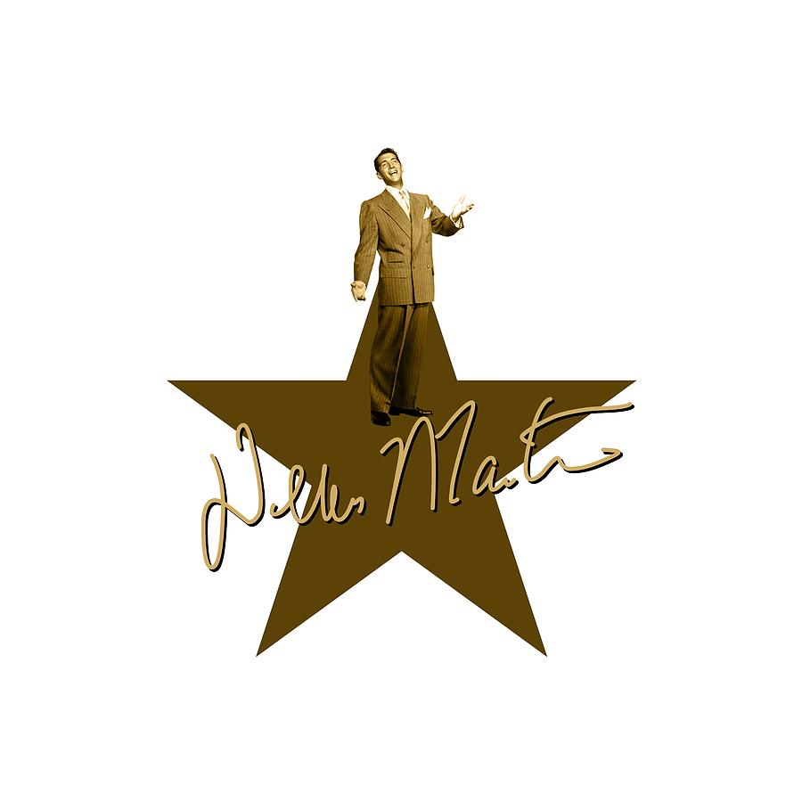
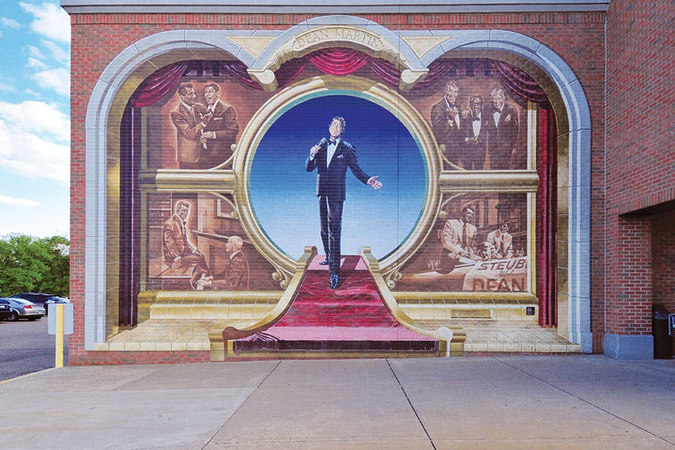

Dean Martin's Executive Summary
Dean Martin Steubenville Festival *postponed due to Covid 19

"I’d hate to be a teetotaler. Imagine getting up in the morning and knowing that’s as good as you’re going to feel all day.
"-Dean Martin
Event Details
- A three day event that takes place in the middle of June
- During the event thousands of visitors descend on Steubenville for a festival of films, memorabilia, concerts, food, a parade and more. Celebrate the life of the "King of Cool" along the banks of the Ohio River and recall the golden days of Hollywood.
- The Dean Martin Festival benefits the Dean Martin Scholarship Funds for local high school students pursuing music and the arts.
Festival Events
- Enjoy concerts, impersonators and karaoke at The Spot Bar (spotbar.com)
- Attend the Dean Martin Memorial Mass at the Holy Name Cathedral (no website; 411 South Fifth Street, Steubenville; 740-264-6177).
- Eat your fill at a Grecian Food Festival and Meatball Eating Contest on South Fourth Street
Dean Martin sights to visit
- The site where Dean's boyhood home and his father's barber shop once stood is located at 319 Sixth Street.
- Just around the corner lies St. Anthony's Church (no website or phone; 711 South St., Steubenville), where Dean was baptized.
- At 329 North Street lies the Naples Steak and Spaghetti House (naplesspaghettihouse.com), one of Dean's favorite places for Italian food.